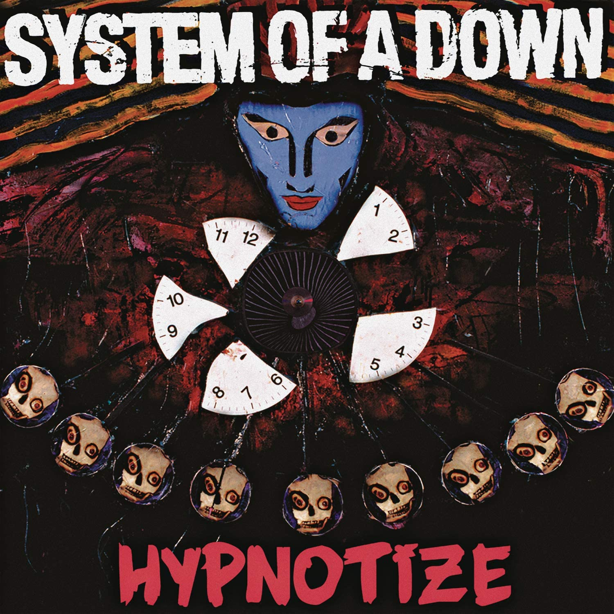
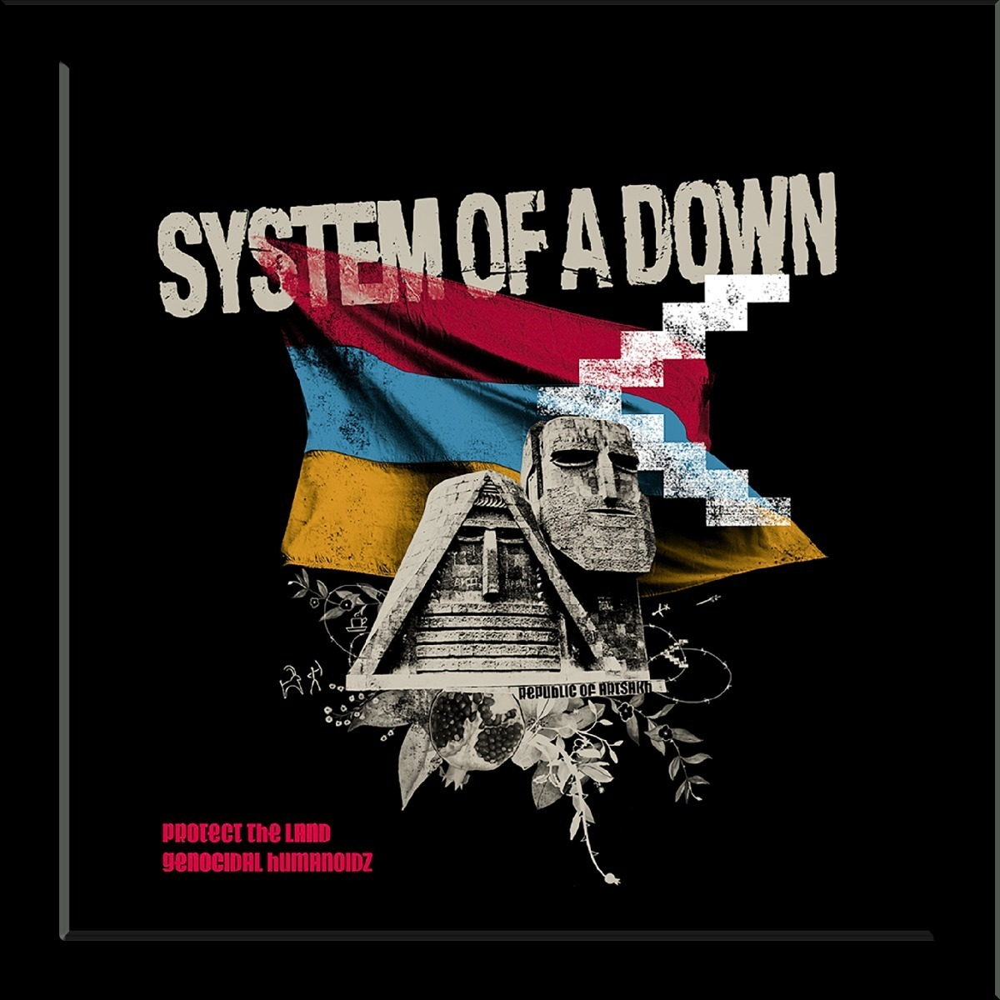
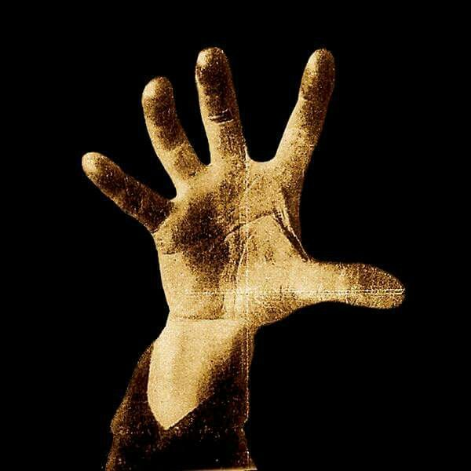
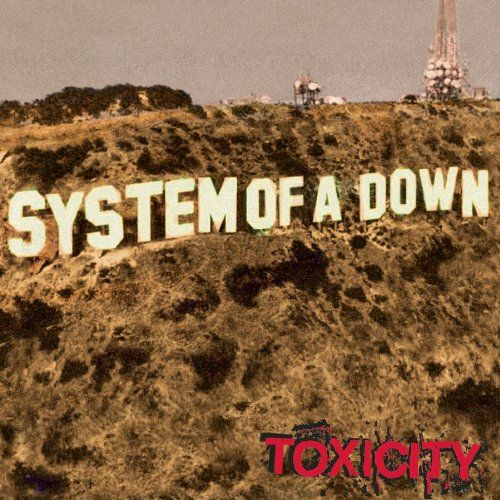
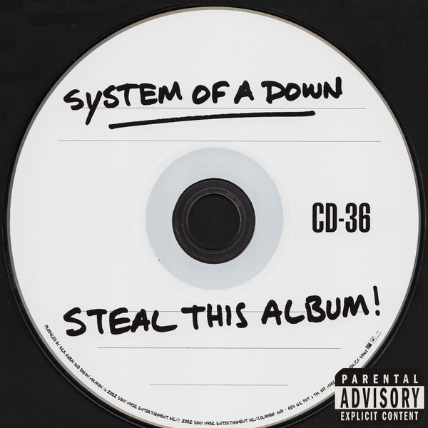
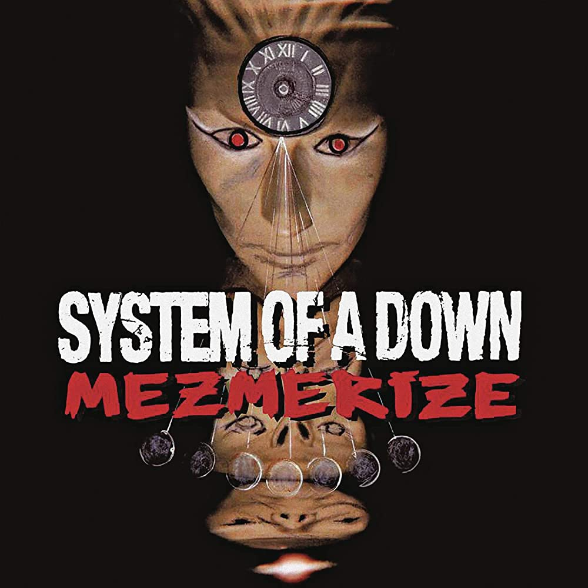

Sytem Of a Down para mim foi uma banda que levantava meu ânimo com suas musicas, porém as suas letras muitas vezes têm um sentindo profundo que representa os problemas do estado e do mundo no qual vivemos.






System Of A Down
Músicas
Algumas músicas da banda:
Attack do álbum hypnotize
Chop suey! (Single)
Deer dance do álbum toxicity
Know do álbum System Of A Down
Mr. Jack do álbum Steal This Album
Cigaro do álbum Mesmerize
Introdução
System of a Down (às vezes abreviado como SOAD ou System) é uma banda de metal alternativo armeno-americana formada em Glendale, Califórnia em 1994. É composta por Serj Tankian (vocais, teclados, guitarra), Daron Malakian (guitarra, vocais), Shavo Odadjian (baixo, vocais) e John Dolmayan (bateria). O grupo é conhecido pelas visões políticas e sociais que inserem nas letras de suas canções.
O System of a Down usa uma grande variedade de instrumentos, incluindo guitarra barítona, mandolins elétricos, sitar, violões de doze cordas entre outros instrumentos orientais. Suas principais influências são as bandas mais antigas de rock alternativo, como por exemplo Nomeansno, Primus e principalmente Faith No More, no qual muitas músicas tem um estilo vocal e andamento/peso parecidos, o que indiretamente também os levou a terem influências do heavy metal, punk rock, jazz, fusion, música folclórica da Armênia, rock clássico e industrial.
História
Primórdios, Soil (1992-1994)
Serj Tankian e Daron Malakian estudaram na mesma escola durante a infância e adolescência, mas, devido à diferença de idade de 8 anos, se conheceram apenas em 07 de junho de 1992, e formaram uma banda de garagem chamada Soil. A banda era originalmente formada por Serj Tankian, como vocalista e tecladista, Daron Malakian como guitarrista, Dave Hakopyan no baixo e Domingo Laranio na bateria. Neste período eles conheceram Shavo Odadjian. Mais ou menos um ano depois, com apenas um show feito e poucas gravações, Domingo e Dave deixaram a banda, dizendo que esta não iria a lugar nenhum.
Fitas demo e gravações (1994-1997)
Após o final do Soil, em 1994, Serj Tankian e Daron Malakian mudaram o nome da banda para System of a Down, cujo nome foi uma adaptação de um poema feito por Daron chamado "Victims of a Down", pois Shavo achou "System" mais interessante e de maior impacto, além de que o grupo queria que seus discos fossem alfabeticamente arquivados perto dos da banda Slayer, que para a banda eram considerados "heróis musicais". Shavo Odadjian, que era o empresário da banda, largou o cargo de gerente de uma casa noturna e entrou nela como baixista, deixando assim, o seu lugar de empresário para David "Breno" Benveniste. Pouco depois, o grupo ficava completo com a adição de Andy Khachaturian na bateria, um velho amigo de escola de Malakian e Odadjian que havia tocado com Malakian em uma banda chamada Snowblind durante sua adolescência. Rapidamente começaram a trabalhar em demos como "P.I.G." ("Mr. Jack" em Steal This Album) e "Flake", tendo feito ainda um cover da canção "The Metro", da banda Berlin, todos estes demos fazem parte da compilação Untitled 1995 Demo Tape. Rumores dizem que além dessas demos, foram gravadas outras, como "Friik!!" (versão de 1995), "36" (versão de 1995) e "Roulette" (com baixo e violão). Nos anos de 1995, 1996 e 1997, eles lançaram três fitas demo com a intenção de promover a banda, na esperança que alguém gostasse de suas músicas e os contratassem.
A primeira fita demo contava com as canções "Suitepee" (tudo junto, diferente da versão final), "Sugar", "DAM" e "P.L.U.C.K.". A segunda fita demo tinha as canções "Honey", "Temper" e "Soil". A terceira fita era composta por "Know", "War?" e "Peep-Hole" (separado por hífen, diferente da versão final). Entre 1994 e 1997, o SOAD fez vários shows em bares e clubes como o Whisky a Go Go, Viper Room e The Palace. Já no ano de 1997, Andy Khachaturian abandona os SOAD com uma lesão na mão sendo substituído por John Dolmayan. Após a performance do novo baterista, ainda sem contrato oficial, em dois concertos realizados em clubes e locais do gênero, o produtor Rick Rubin, ainda sem qualquer compromisso com o grupo, gostou da banda e pediu para manterem contacto com ele. Perto do final do ano é gravado mais um demo, mas desta vez com o intuito de ser lançado apenas para as gravadoras - os fãs e restante público só tiveram acesso a este registo anos mais tarde quando foi disponibilizado na internet, conhecidas como a quarta fita demo.
O começo do sucesso (1998-2000)
De todas as gravadoras que receberam o demo, é a American Recordings, de Rick Rubin, que acaba se mostrando interessada, e assim que o contrato é selado, a banda entra em estúdio para gravar seu primeiro álbum. Ainda em 1997, os concertos dos SOAD foram batizados com o nome The Dark Red Experience.
No verão do ano seguinte, é editado o álbum de estreia auto-intitulado da banda. Em junho de 1998 é lançado o disco. "Sugar" e "Spiders" foram os primeiros singles a ganhar desde cedo destaque nas rádios. Algumas músicas que faziam parte da "quarta fita demo" ficaram de fora do álbum, sendo elas "Blue", "Friik!!", "Metro", "Marmalade", "Storaged" e "36", dando lugar a "Suggestions", que não estava na fita, porém, "Marmalade" e "Storaged" foram lançadas numa edição especial do disco, apenas no Japão. Após o lançamento do álbum, a banda entrou em turnê, abrindo shows para Slayer e Sepultura, chegando até a actuar no palco secundário do Ozzfest de 1998. A banda chegou a fazer turnê com Incubus e Fear Factory.
Em 1999, o SOAD lança uma edição especial do seu primeiro álbum, com disco duplo, e contava com quatro canções ao vivo, gravadas em Nova Iorque, sendo elas: "Know", "War?", "Suite-Pee" e "Sugar". Chega o ano 2000 e o SOAD vai ganhando espaço no mundo musical, mas ainda não é uma banda muito conhecida. Então eles fazem uma versão de estúdio para a canção "Snowblind", do Black Sabbath, cuja entrou no álbum em tributo a banda chamado Nativity in Black II. Nesse mesmo ano, começam a preparar o álbum que levou a banda ao auge, o Toxicity, disco que seria lançado no ano seguinte. Em alguns shows desse ano, a banda chegou a tocar as canções "Prison Song" e "Psycho", mas ainda eram versões não-terminadas e então diferentes das versões finais. No final do ano deu-se início às gravações de Toxicity, além de fazerem o primeiro show beneficente em homenagem às vítimas do genocídio armênio, o Souls, onde boatos dizem que tocaram a canção "Pictures", lançada somente em 2002.
A fase dourada (2001-2004)
A fase dourada do SOAD surge após o lançamento do álbum Toxicity, que estreou em primeiro lugar na Billboard e atingiu o topo das paradas no Canadá, inclusive na semana dos ataques de 11 de setembro de 2001 em Nova Iorque. Permaneceu ainda assim no topo na semana dos ataques, embora sob fortes críticas políticas sobre o controverso single "Chop Suey!" que foi banido das rádios americanas devido à sua letra, pois tinha uma grande semelhança aos ataques que aconteceram.
Mesmo assim, o videoclipe continuou a passar na MTV, o que resultou num grande sucesso assim como a canção "Toxicity". Mesmo com a polêmica ao redor de "Chop Suey!", foi indicado para o Grammy. O disco ainda contava com a música "X", que era tocada ao vivo desde 1995. Nesse mesmo ano (2001) a banda entra em turnê, chamada de Pledge of Alligeance, com Slipknot, Rammstein, Mudvayne, American Head Charge e No One, para promover o álbum Toxicity. Em um desses shows, na cidade de Rosemont, Illinois, foram feitas gravações em vídeo, onde "Chop Suey!", "Prison Song" e "Bounce" entraram em DVD em uma edição especial de Toxicity, cujo tinha a capa azul. Outra versão do CD, com capa vermelha, também foi lançada como um disco bônus, contendo os bastidores da gravação do álbum. O disco vendeu aproximadamente 12 milhões de cópias em todo o mundo.
Mais tarde, ainda em 2001, foram colocadas na internet algumas faixas não editadas e não acabadas, que apesar de muitos julgarem como sobras do álbum Toxicity, Serj afirma que as canções não são restos, e chegam a ser até melhores que os singles consagrados do álbum de 2001. Sendo assim, a banda entrou em estúdio novamente e regravou essas canções, alterando algumas, tanto na estrutura quanto no nome, e lançaram o álbum chamado Steal This Album! em novembro de 2002. O nome do mesmo surgiu como uma referência ao título do livro de Abbie Hoffman, Steal This Book, e também como uma mensagem a todos os que roubam música e as lançam na Internet. O álbum não tem encarte e o disco foi feito para parecer um CD-R escrito a caneta. Este disco contava com canções que já eram tocadas a vários anos ao vivo, sendo elas "Chic 'N' Stu" (desde 1999), "36" (tocada uma vez em 1998) e "I-E-A-I-A-I-O" (2000). Músicas que, inclusive, poderiam até ter entrado para o álbum anterior, Toxicity. Além da versão final, apenas com violão e violino de "Roulette". O single de apresentação do álbum foi "Innervision", promo que recebeu boa aderência por parte das rádios. Deste disco ainda tem destaque para a canção "Boom!", cujo vídeo gravado em 2003, representava um protesto contra a guerra do Iraque feita pelos Estados Unidos, mostrando protestos contra a guerra em todo mundo, inclusive no Rio de Janeiro e São Paulo. Foram feitas também 50 mil cópias com quatro "capas" diferentes, cada uma com um desenho feito por um membro da banda. No final de 2002, a canção "Chop Suey!" foi tocada no prêmio da MTV Video Music Awards Latinoamérica. Serj também juntou várias poesias dele, que foram escritas durante sua vida, e fez um livro de poesias chamado "Cool Gardens".
Para mais informações: System of a Down A fase dourada
Álbum duplo (2005-2006)
Em 2005, anunciaram definitivamente o lançamento de um álbum duplo, que se chamaria Mezmerize e Hypnotize, porém, seria um álbum duplo, mas diferente, pois seria lançado em duas partes, uma em maio e outra em novembro. Os álbuns são ligados de certa forma, pois juntando o encarte dos dois forma-se um desenho único, a canção de abertura do Mezmerize é "Soldier Side - Intro" e a canção de encerramento do Hypnotize é "Soldier Side", fazendo assim a ligação entre eles. Em janeiro de 2005 o SOAD volta oficialmente a ativa, participando do evento Big Day Out, em um total de sete shows, onde tocaram músicas inéditas, que seriam lançadas posteriormente em seu álbum duplo, as canções tocadas foram: "Kill Rock 'n Roll", "Holy Mountains", "Tentative" (Primeira vez executada ao vivo) e "Cigaro". Tocavam também pela primeira vez ao vivo a canção "Highway Song". No dia 24 de abril o SOAD realiza o terceiro show beneficente chamado Souls. Consequentemente, usaram cenas desse show para a realização do DVD Screamers, um documentário sobre o genocídio armênio.
Finalmente chega o mês de maio e o lançamento de Mezmerize, um álbum bem diferente do que estavam acostumados, pois era mais trabalhado e contava com maior participação de Malakian nos vocais, tanto como vocal principal quanto "fundindo" sua voz com a de Tankian. E contava com a canção vencedora do Grammy de melhor single, "B.Y.O.B.", que levou o disco ao topo das paradas em pelo menos doze países, e alcançou o primeiro lugar na Billboard 200, vendendo 800 mil cópias no mundo na primeira semana do seu lançamento. O segundo e último single "Question!" foi lançado com Shavo tendo um papel importante na edição do videoclipe. Após o lançamento de Mezmerize, seguiu-se numa extensa turnê nos Estados Unidos e também no Canadá para promover o álbum. Nessa turnê, a banda já tocava a música com o nome do segundo álbum, "Hypnotize". E foi em um desses shows que fizeram a gravação do videoclipe de "Hypnotize", em Grand Rapids, em setembro. Nesse show, a canção foi tocada duas vezes, uma para o show e outra para o videoclipe.
Hypnotize, a segunda parte do álbum, foi lançada em 22 de novembro do mesmo ano e rapidamente atingiu a primeira posição da Billboard 200, vendendo 320 mil cópias, o que fez com que o SOAD entrasse numa lista onde apenas figuram os Beatles, Guns N' Roses e os rappers Tupac e DMX como os artistas a conseguirem no mesmo ano dois álbuns na primeira posição das paradas. O novo álbum era muito semelhante ao primeiro, tão bem trabalhado quanto seu irmão gêmeo, Mezmerize, e contava também com maior participação de Daron nos vocais, o que desagradou alguns fãs, mas agradou a outros. O disco ainda teve uma edição especial dual disc, que contava com um DVD com o vídeo dos bastidores da gravação dos álbuns e os videoclipes de "B.Y.O.B." e "Question!".
Antes de lançarem o álbum duplo, a banda anunciou que havia aproximadamente 30 músicas prontas e que seriam dividas entre os dois álbuns, porém, apenas 23 foram escolhidas. Sendo assim, algumas ficaram de fora, são elas: "Hezze", "174", "Citadel", "Religious People", "Blowing Bubbles", "Annoying Car Alarm", "Antibiotics" e "Charades".
Hiato (2006-2010)
Em 2006, a banda fez o videoclipe de "Lonely Day", cuja canção foi indicada ao Grammy, porém, não ganhou. O SOAD então se prepara para entrar em nova turnê, com alguns shows no Canadá e então o Ozzfest. Pois após cancelarem a quarta edição do Souls (que foi anunciado antes), a banda anuncia que o Ozzfest vai ser a última turnê e que então eles vão entrar em uma pausa por tempo indeterminado (hiato), porém, não significava o fim da banda, era apenas um tempo para os membros fazerem outras coisas. Daron Malakian disse numa entrevista a MTV: "Não vamos acabar. Se esse fosse o caso não teriamos feito o Ozzfest. Após o Ozzfest, vamos fazer uma longa pausa e realizar os nossos próprios projetos. Como banda, temos estado juntos há mais de 10 anos, e eu penso que uma pausa seria algo saudável."
Até mesmo durante um concerto em Houston, no Texas, Malakian aproveitou um momento para desmentir os rumores que davam a banda por acabada: "Tem circulado diversos rumores sobre o nosso fim. Bem, não os ouçam. Nós quatro seremos sempre os System of a Down!". A última atuação da banda foi em 13 de agosto de 2006 em West Palm Beach, na Flórida. No final do show, todos os quatro membros se abraçaram e se curvaram aos fãs como forma de agradecimento. "Hoje será o último concerto depois de tantos anos juntos. Voltaremos em breve. Só não sabemos quando" - palavras de Malakian.
Em abril de 2008, o guitarrista Daron Malakian e o baterista John Dolmayan deram uma entrevista para a revista Kerrang!. Quando falava-se muito que a banda tinha acabado, Malakian disse: "Todos saberemos quando voltar na hora certa." Dolmayan acrescentou, "Simplesmente voltaremos." Malakian voltou a falar: "Sim. Vou me sentir muito bem e feliz. Eu posso respeitar essa situação (o hiato) mais do que eu respeitaria uma situação como "o vocalista pegou a minha namorada" e esse tipo de besteira. Não, cara. Serj é uma pessoa muito importante para mim e eu sou para ele. É assim que termina. O mesmo para Shavo e John. E sempre seremos. Isso tudo foi uma parte grande de minha vida. Estivemos tocando juntos por muito tempo, cara. Passamos juntos por várias merdas, como amigos e companheiros de banda - Tivemos que dividir uma cama no Réveillon (Risos)!"
Retorno (2010-2014)
Em 29 de novembro de 2010, após várias semanas de rumores da internet, System of a Down anunciou oficialmente que eles estariam se reunindo para uma série de grandes datas em festivais europeus, em Junho de 2011. Entre as datas da turnê anunciadas incluídas são, Download Festival no Reino Unido, na Suíça Greenfield Festival, na Alemanha Rock am Ring, na Suécia Metaltown, na Áustria Nova Rock Festival e Provinssirock na Finlândia. Em sua declaração à reunião postada em seu site, a banda não era clara quanto à extensão de sua reformação. Ele dizia: "Nós não temos nenhum plano do tipo -. nós estamos jogando esses programas simplesmente porque queremos tocar juntos novamente como uma banda e para vocês, nossos fãs incríveis". Em 1 de março de 2011 a banda anunciou que iria desempenhar vários shows na América do Norte em maio e junho. A turnê teve início em 10 de maio de 2011, em Edmonton, Alberta. A banda participou de um dos dias do Rock in Rio 2011, dia 02 de Outubro (que inclusive recebeu o maior número de votações em um enquete feita no site sobre o Top-Line), no mesmo dia em que a banda de hard rock norte-americana Guns N' Roses. Um show foi realizado antes do Rock in Rio no Brasil, dia 01/10 eles se apresentaram em São Paulo na Chácara do Jockey.
O System of a Down anunciou o retorno aos palcos em 2013, com a confirmação de datas para uma turnê europeia agendada para o mês de agosto, com shows em: 07/08/2013 – Anapa, Rússia - Krasnodar Area; 09/08/2013 – Gavle, Suécia - Gasklockorna; 13/08/2013 – Lodz, Polônia - Atlas Arena; 16/08/2013 – St. Polten, Áustria - Green Park; 27/08/2013 – Milan, Itália - Fiera Milano Rho, dentre outras datas.
Em 29 de julho de 2013, o SOAD se apresentou no Hollywood Bowl (Hollywood). Ao todo foram tocadas 25 músicas, entre elas: "Peephole" (tocada pela última vez em 2002); "X" (tocada pela última vez em 2002); "A.D.D." (tocada pela última vez em 2003); "Soil" (tocada pela última vez em 2004); "Spiders" (tocada pela última vez em 2005). O anfiteatro tinha capacidade para 17.376 pessoas. A turnê contou com mais 14 eventos.
Em 11 de novembro de 2014, a banda anunciou o seu primeiro e único show no ano. O System Of a Down foi atração principal na primeira noite da edição do Almost Acoustic Christmas, realizado pela KROQ com streaming para o mundo inteiro através do seu site oficial.
Em 17 de novembro de 2014, a organização do festival Rock in Rio anunciou o System Of A Down como atração principal para 2015. Posteriormente foi confirmado que o show seria em 24 de setembro de 2015.
Em 24 de novembro de 2014, a banda anunciou a turnê "Wake Up The Souls"[8] que celebrou o 100° aniversário do genocídio armênio. No vídeo promocional da turnê Serj disse:
- " Por anos temos comemorado fazendo um show no SOULS, então decidimos chamar essa turnê de Wake Up the Souls Tour. Tocaremos na Armênia pela primeira vez no dia 23 de abril, um dia antes da comemoração do centésimo aniversário. Acho que é algo muito importante. O importante também é a justiça, sabe. Se alguém matou minha família e incendiou minha casa, não vou correr atrás deles por cem anos para que eles virem e digam: ‘desculpa’. Tipo, o que isso significa? Penso que deve haver incriminação, justiça, cortes envolvidas etc. tem que ser feito do jeito certo. "
Shavo completou:
- " Então teremos uma turnê chegando em abril porque é o centésimo aniversário do Genocídio Armênio. Nós somos o System of a Down e gostaríamos que vocês se unissem a nós e apoiassem nossa causa. Fazer mudança, fazer diferença."
Turnê "Wake Up The Souls" (2015)
Em 2015, A turnê "Wake Up The Souls" começou em 10 de abril em Londres, Reino Unido e terminou em 23 de abril com sua primeira performance na Armênia com um show gratuito na Praça da República de Yerevan. O show na Armênia foi emocionante do início ao fim, com mais de 2 horas de duração, streaming no Youtube com 300 mil pessoas assistindo e um publico de 50 mil pessoas no local.
A turnê "Wake Up The Souls" foi um sucesso e passou por:
06 de abril – The Forum – Califórnia, Estados Unidos
10 de abril – Wembley Arena – Londres, Reino Unido
14 de abril – La Halle Tony Garnier – Lyon, França
16 de abril – Forest National – Bruxelas, Bélgica
17 de abril – Ziggo Dome – Amsterdã, Holanda
20 de abril – Olympisky – Moscou, Rússia
23 de abril – Republic Square – Yerevan, Armênia
O público total da turnê foi de 157.005 pessoas.
No segundo semestre de 2015 a banda anunciou uma pequena turnê na America do Norte e Sul:
17 de junho – DTE Energy Music Theatre – Detroit, Estados Unidos
19 de junho – Molson Canadian Amphitheatre – Toronto, Canadá
20 de junho – Marina de Montebello – Montebello, Canadá
24 de setembro – Cidade do Rock – Rio de Janeiro, Brasil
25 de setembro – Arena Anhembi – São Paulo, Brasil
27 de setembro – Santiago Gets – Chile
30 de setembro – Club G.E.B.A – Buenos Aires, Argentina
3 de outubro – Parque Deportivo – Bogotá, Colombia
6 de outubro – Palacio de los Deportes – Cidade do México, México
Recomeço e conflitos (2016 - Presente)
A banda confirmou no dia 10 de outubro de 2016, que após um ano sem atividades faria uma turnê europeia para o ano seguinte, com 20 shows agendados até aquele momento incluindo participações no Download Festival, Rock am Ring, Festival Pinkpop e muitos outros.
Em novembro de 2016, Shavo disse à revista Kerrang! que o System of a Down tem trabalhado em novas músicas por 6 meses desde aquele momento, relatando que 15 músicas “dignas de estarem em um álbum” estavam prontas.
Em maio de 2017 com boatos de um novo álbum surgindo e a turnê, Shavo Odadjian deu entrevista a Metal Hammer dizendo:
– “É claro que há sinos e assobios – chamamos de System of a Down. Não é nada que eu possa falar de antemão, porque quando eu subo no palco, as coisas simplesmente acontecem. Sim, vamos ter um grande repertório, e sim, eu tenho trabalhado na produção, mas uma vez que começamos a tocar, temos duas horas para entregar um show fantástico para os nossos incríveis fãs.”
Após a turnê de 2017, Daron Malakian reativou o Scars on Broadway e reconheceu que o System Of A Down ‘não irá fazer um álbum tão breve’ e isso o libertou para novos projetos.
Daron disse à Billboard que o repertório de 12 faixas foi realmente gravado há seis anos, mas ele estava esperando a decisão do SOAD em fazer algo, o que o levou a segurar o álbum para que não interferisse na banda.
Pouco depois, Malakian escolheu Tankian como o motivo pelo qual nenhum novo álbum foi lançado. Dias depois, John Dolmayan desabafou e publicou um texto em sua conta oficial no Instagram, dizendo que "muitas teorias e especulações circularam ao longo dos anos culpando um só membro pela falta de material novo" e que "a verdade é que cada membro é responsável pelo fracasso e sucesso da banda igualmente"
Logo depois o vocalista Serj Tankian concordou com as colocações do baterista através de sua conta oficial no Instagram com a frase:“Bem dito, irmão”.
Em um post no Facebook, Tankian detalhou sua visão dos conflitos passados e presentes da banda e sua situação geral, dizendo ", tive que estabelecer limites pois sabia que nunca poderia ser feliz se as coisas voltassem a ser exatamente como eram na banda.E como não pudemos chegar a um acordo olho no olho em todos esses pontos, decidimos deixar de lado a ideia de um álbum por enquanto." Tankian também expressou incerteza sobre se o novo álbum seria feito ou não, mas não descartou a possibilidade. Ele então descreveu como o som seria, "Tem que ser orgânico, tem que se sentir bem em todos os sentidos" .
Em 07 de outubro de 2018, o System Of A Down iniciou sua turnê, começando pela Cidade do México e passando por Califórnia, Sacramento, Phoenix até terminar em Las Vegas.
Em dezembro do mesmo ano, Shavo Odajian foi perguntado se o System gravaria um novo álbum, ele disse:
“Creio que sim. Acho que podemos fazer isso. Nada de tão grave aconteceu entre nós que impedisse de trabalharmos em estúdio. Nada! Tudo é apenas uma questão de gosto. Precisamos esquecer o passado e seguir em frente. E acho que isso vai acontecer. Eu não estou preocupado. Não estou nem um pouco preocupado.
Todas as coisas que vocês ouviram durante o verão, que eles trouxeram para o público, foram coisas do passado. Aconteceram há muito tempo. Portanto, 10 anos depois, muito assunto veio à tona, mas nada era realmente novo. Eram coisas antigas, e eles apenas resumiram. Uma pessoa [Daron] concedeu uma entrevista, e eu acho que nesta entrevista eles parafrasearam suas palavras e saiu errado. Eu também li, e não era para ser daquela forma. Ele não iria culpar ninguém.
Conversei com o Daron, e ele falou: “Cara, eu não disse aquelas coisas, me expressei de outra forma”. De qualquer modo, isso meio que fez outra pessoa [Serj] ter suas opiniões, e então ele teve que publicar o seu ponto de vista. Foi apenas uma questão de pensamentos.
Nós não estamos nem em conflito. Quando nos vemos, ficamos muito felizes e bem. É estranho que não tenhamos um novo álbum ou muitos discos, e é estranho que não façamos muitas turnês pelo mundo. Nós saímos em turnê, mas em pouca quantidade.
É só uma questão de tempo. Eu só espero que isso aconteça o mais cedo do que esperamos. Mas nós já escrevemos materiais juntos. Daron trouxe muito material. Eu trouxe material para o Daron e nós trabalhamos nisso tudo. Eu tenho muito mais coisas que estão prontas para sair. Eu já falei isso ao Daron também. Eu disse: ‘Nós temos que fazer isso’ e ele respondeu: ‘Sim, eu adoraria’. Então todos nós queremos, e eu acho que Serj está meio que fazendo seus próprios trabalhos, eu entendo."
Em meio a conflitos e turnê, o System Of A Down anunciou dois shows para 2019, o primeiro em Columbus, Estados Unidos no festival Sonic Temple e o segundo em Chicago, Estados Unidos no festival Chicago Open Air.
Em 06 de novembro de 2020, em meio aos confrontos no Alto Carabaque envolvendo a Armênia e países vizinhos como o Azerbaijão, a banda lançou dois novos singles como forma de manifestação contra o conflito, intitulados respectivamente de "Protect the Land" and "Genocidal Humanoidz".
Integrantes
Atuais
- Serj Tankian - voz, teclados, controlador, guitarra e backing vocals (1992 a 1994 em Soil, 1995–presente)
- Daron Malakian - voz, guitarra, teclados e backing vocals (1992-1994 em Soil, 1995–presente)
- Shavo Odadjian - baixo e backing vocals (1993-1994 em Soil, 1995–presente)
- John Dolmayan - bateria (1997–presente)
Ex-integrantes
- Andy Khachaturian - bateria (1995–1997)